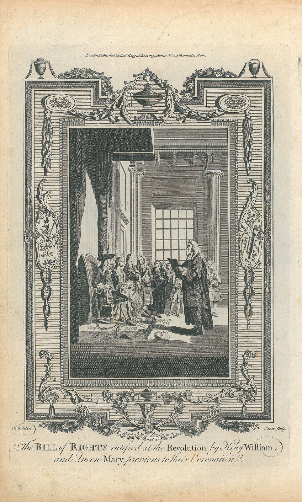
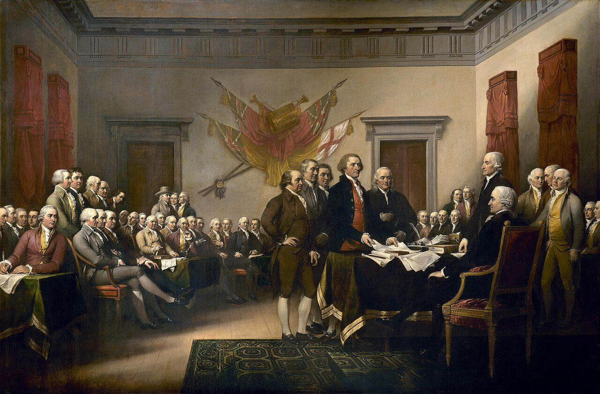

사진 · 권리 장전을 승인하는 윌리엄과 메리 판화
중학교 역사① · 5단원 제국주의와 국민 국가 건설 운동
의회영국 혁명과 미국 혁명
새뮤얼 웨일, 「권리 장전을 승인하는 윌리엄과 메리」(판화, 1783) · 퍼블릭 도메인
“왕의 나라에서
왕의 나라에서
국민의 나라로 어떻게 바뀌었을까?
사실권리 장전 · 독립 선언 · 헌법
해석누가 권력을 나누어 가졌나
확장그 ‘국민’에 누가 빠졌나
세금은
누가 정할까?
사실1628 권리 청원
해석왕과 의회의 다툼
확장1642 내전으로
1688
사실피를 크게 흘리지 않은 왕의 교체
해석명예혁명
확장누가 ‘명예’롭다고 불렀을까
사진 · 권리 장전은
누구의 권리였을까?
권리 장전은
누구의 권리였을까?
사실의회 동의 없이 세금·법 · 군대 금지
해석의회의 힘이 왕보다 위로
확장의원을 뽑을 수 있던 사람은
새뮤얼 웨일, 「권리 장전을 승인하는 윌리엄과 메리」(판화, 1783) · 퍼블릭 도메인
대표 없이
과세 없다
사실1765 인지세법
해석영국 의회에 식민지 대표는 없다
확장1773 보스턴 차 사건

사진 · 이 그림은
그날 그대로일까?
이 그림은
그날 그대로일까?
누가화가 존 트럼불
언제40년 뒤인 1819년
사실·주장서명하는 장면? 초안을 내는 장면
존 트럼불, 「독립 선언」(1819) · 미국 국회 의사당 · CC0
모든 사람은
평등하게 태어났다
사실독립 선언서의 말
해석정부는 국민의 동의로
확장노예로 사는 사람이 약 50만 명
1787 미국 헌법
공화정왕 대신 뽑은 대통령
연방제주와 연방이 권력을 나눔
삼권 분립입법 · 행정 · 사법
두 혁명의 공통점
세금동의 없이 걷을 수 없다
대표국민이 뽑은 의회
문서권리를 글로 적다
나는 투표할 수
있었을까?
1689 영국땅을 가진 일부 남성
1789 미국주마다 달랐다, 대부분 재산 가진 백인 남성
오늘 한국만 18세 이상 국민
“시민 혁명이 바꾼 가장 큰 것은 이다.